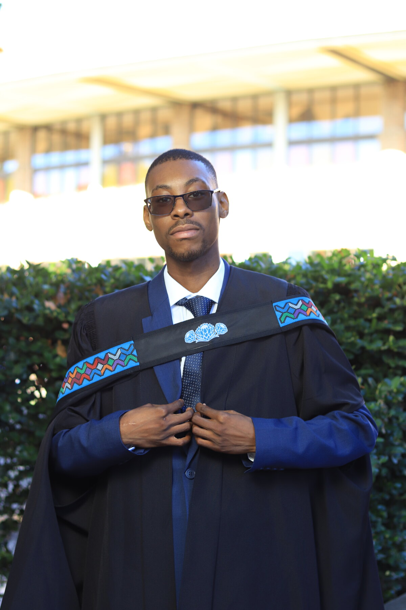
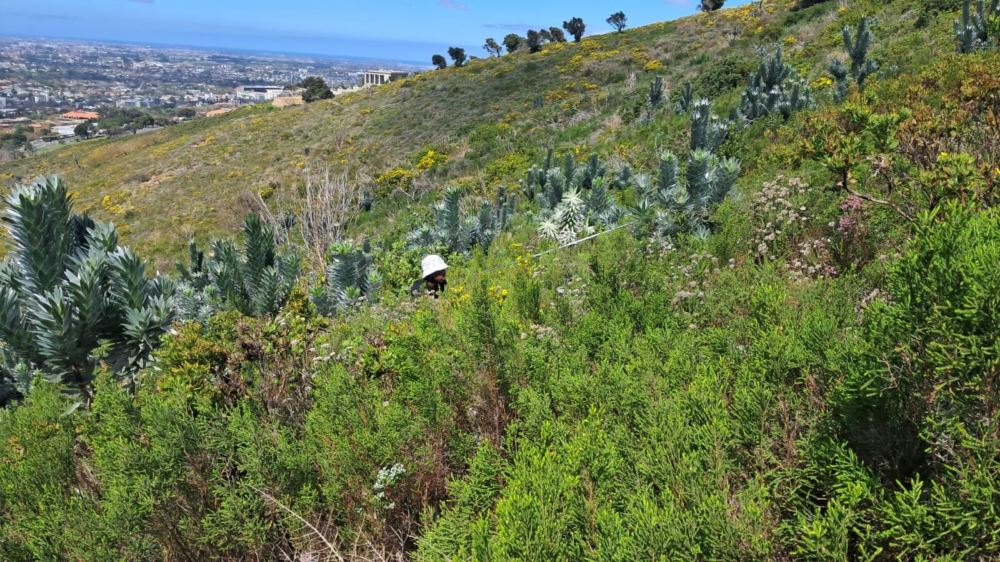

Curriculum vitae / Phemelo Mojalefa Rutlokoane
Phemelo
Rutlokoane.
Quantitative ecology · Biostatistics · Remote sensing
I analyse ecological and spatial data to understand species, habitats and environmental change. My work connects statistical modelling, hyperspectral imagery and biodiversity monitoring.
Johannesburg, South Africa

Honours overall average · UWC, 2025
JGR: Biogeosciences · BioSCape
From ecological data to reproducible analysis
Experience.
2026–present
Wild Impact · Landscape Conservation
Biodiversity Monitoring Intern
Wildlife analysis for iSimangaliso; TrapTagger and EventMeasure workflows; conservation education, visual communication and carbon-tracking tools.
See the work2025
University of the Western Cape
Undergraduate Tutor
Ecology and biology practicals and tutorials for groups of 15–25 students.
2022–2024
Cape Flats Nature Reserve
Conservation Volunteer
Wildlife and vegetation surveys, indigenous plant propagation, invasive plant clearing and burn preparation.
Research in focus.

Remote sensing · Under review
Finding the silvertree.
AVIRIS-NG hyperspectral imagery and LVIS LiDAR, with XGBoost modelling and SHAP interpretation.
Explore the study ↗Marine ecology
Following krill through the water column.
Weighted mean depth, KS tests, RDA and PERMANOVA in St Helena Bay.
Methods & tools.
- Analyse
- R, Python, vegan, lme4, XGBoost, SHAP
- Map
- QGIS, ArcGIS Pro, sf, terra, hyperspectral imagery, LiDAR
- Monitor
- Camera traps, TrapTagger, BRUVS, EventMeasure
- Communicate
- Quarto, Jupyter, GitHub, conservation education and visual reporting
Research · Conservation · Collaboration
Let’s put the data to work.
References available on request.